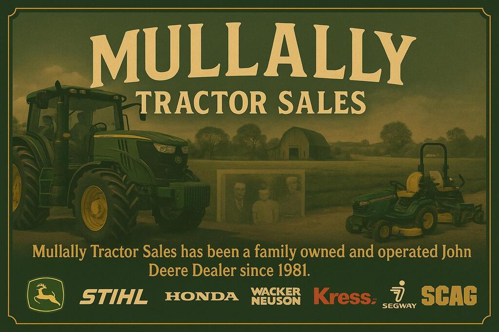
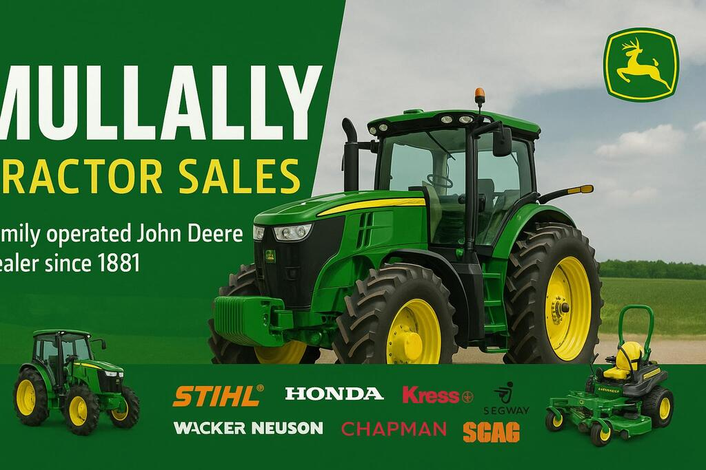
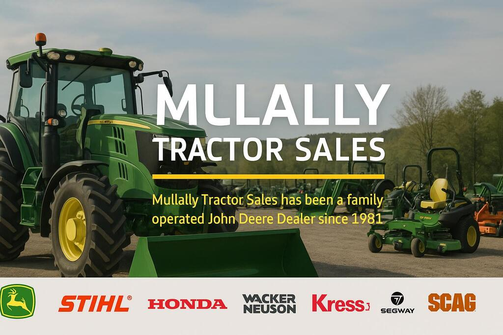
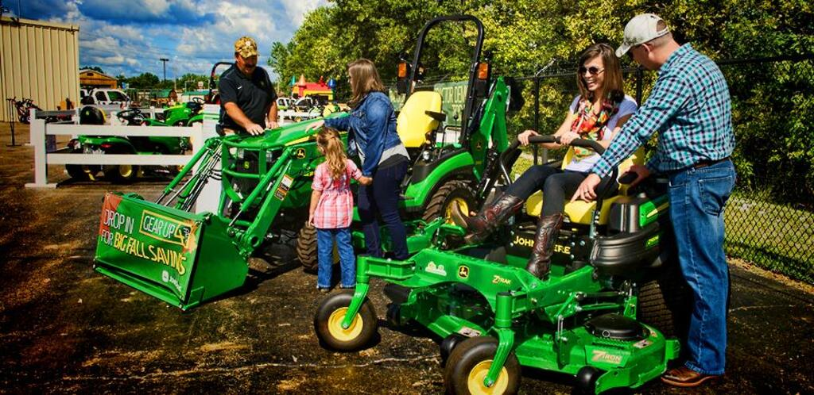
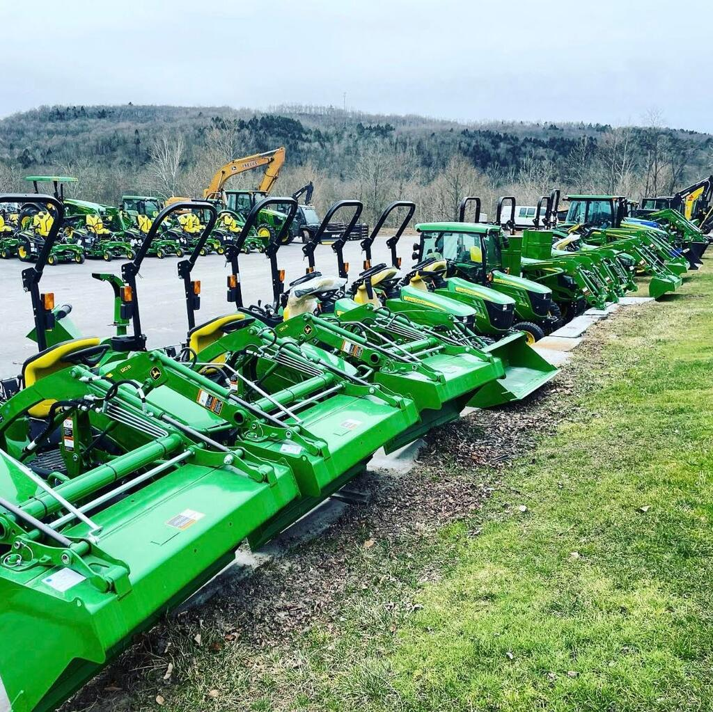
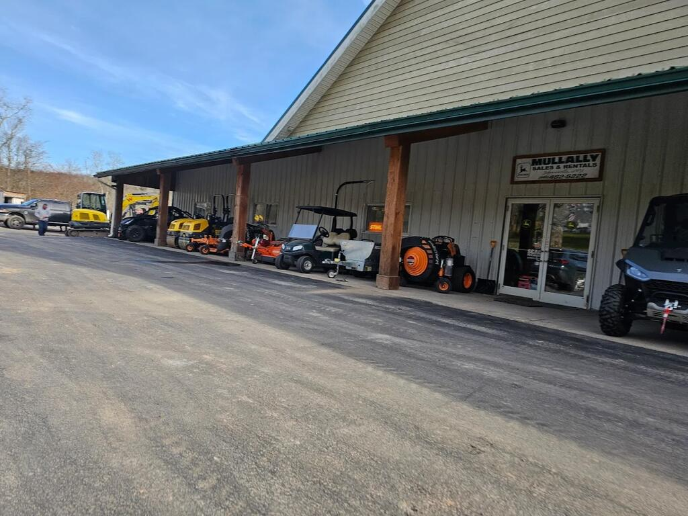
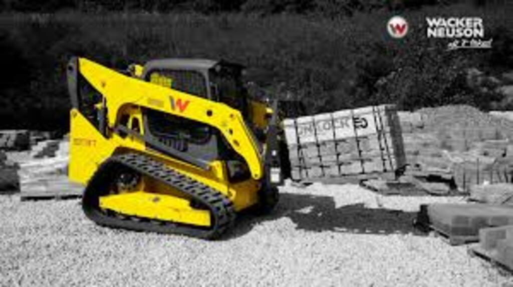
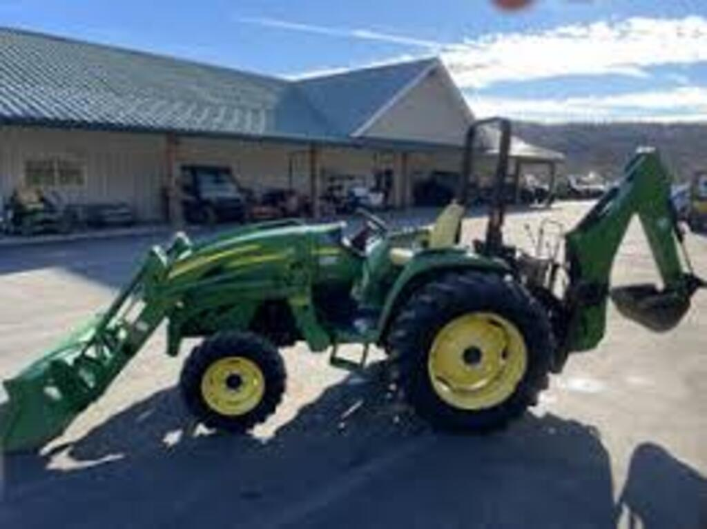
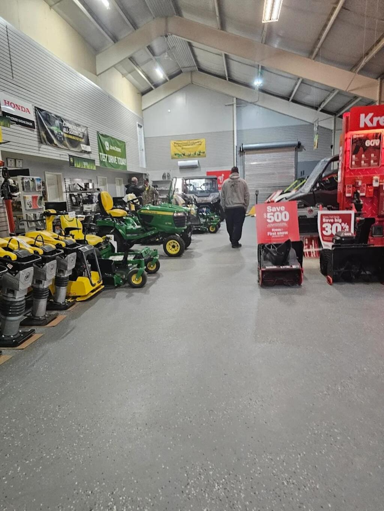
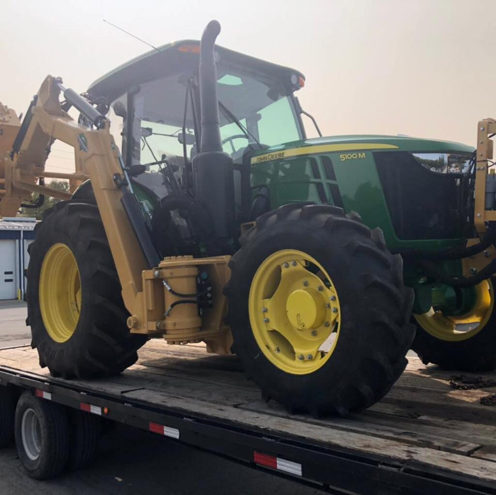

About Mullally Tractor Sales
Welcome to Mullally Tractor Sales, your trusted source for quality tractors, mowers, and agricultural equipment in Jeffersonville, New York, and the surrounding Sullivan County area.
 Our Story
Located on State Route 52 in Jeffersonville, we have been serving the local farming and landscaping community with reliable equipment and expert service. Our commitment is to provide customers with the right equipment for their specific needs, whether you're managing a small property or running a large agricultural operation.
  What We Offer
We specialize in a wide range of equipment including sub-compact and compact tractors, mowers, and specialized attachments. Our product line features trusted brands like John Deere, along with high-quality implements such as flail mowers and other land management tools.
Every piece of equipment we sell is carefully selected for its reliability, performance, and value. We understand that your equipment is an investment, and we're here to help you make the right choice for your specific applications.
  Our Service
At Mullally Tractor Sales, we believe in building long-term relationships with our customers. We provide personalized service, taking the time to understand your needs and recommend the best solutions. Our experienced team is knowledgeable about all the equipment we sell and can provide guidance on proper operation and maintenance.
Location & Hours
We're conveniently located at 4510 State Route 52 in Jeffersonville, NY 12748, making us easily accessible to customers throughout Sullivan County and the surrounding areas. Contact us to discuss your equipment needs or to schedule a time to see our products in person.
Get In Touch
Ready to find the right equipment for your land management needs? We're here to help.
Phone: (845) 482-5222
Email: mullallytractor@gmail.com
Address: 4510 State Route 52, Jeffersonville, NY 12748
Store Hours: Mon-Fri 8am-5pm, Sat 8am-12pm, Sun closed